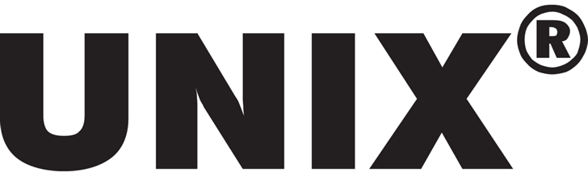

Как был создан UNIX
 У UNIX не самое интересное логоВ начале 60-х научное сообщество активно проявляло интерес к системам с разделением времени. Новая технология должна была значительно изменить подход к использованию компьютеров, увеличить их эффективность, предоставив возможность создавать многопользовательские системы. Это должно было уменьшить простой вычислительного времени, возникающий из-за неизбежного человеческого фактора. Так в MIT появился исследовательский проект MAC. В рамках этого проекта были созданы первые операционные системы с разделением времени под названиями CTSS, BBN, DTSS, JOSS, SDC и прочие, ставшие предшественниками Multics.
В 1964 году MIT’s Project MAC, Bell Telephone Laboratories и General Electric Company под руководством профессора Массачусетского университета Фернандо Хосе Корбато начали разработку Multics (Multiplexed Information and Computer Service) – многопользовательскую операционную систему с разделением времени использования программ. Новая технология позволила бы значительно снизить стоимость вычислительных мощностей, предоставив организациям возможность работать на одном компьютере. Multics должен был реализовать множество инноваций того времени (в том числе и интерактивный многопользовательский режим). Новая ОС разрабатывалась для дорогого компьютера GE-645.
Multics был очень амбициозным и дорогостоящим проектом для своего времени, который должно было выполнять множество передовых для своего времени функций:
- Поддерживать до 1000 пользователей одновременно.
- Работать круглосуточно без сбоев.
- Поддерживать различные языки программирования и пользовательские интерфейсы.
- Поддерживать широкий набор приложений.
- Иметь надёжную файловую систему.
- Иметь онлайн-документацию.
В 1969 году MIT приступил к реализации системы разделения времени (англ. Time-Sharing), но в том же году Bell Labs вышли из проекта, потому что посчитали его невыгодным. Чуть позже General Electric продал проект Honeywell, а после проект перепродали Bull. Но не смотря на это, проект оказался успешным, а последний компьютер с Multics был выключен в 2000 году.
В 1969 году Кен Томпсон, сотрудник Bell Labs, написал для Multics игру Space Travel, а после выхода компании из проекта, переписал её на язык программирования Fortran для GECOS (ОС General Electric) на GE-635. Позже Кен Томпсон вместе с коллегой Деннисом Ричи переписали игру для более дешёвого мини-компьютера с лучшим графическим терминалом DEC PDP-7 на кросс-ассемблере. Для игры было написано множество утилит (первая из них – файловая система) – из них была создана новая операционная система для PDP-7, которая сначала называлась UNICS (Uniplexed Information and Computer System) по предложению Брайана Кернигана.
К концу 1969 года UNICS была переименована в Unix и имела ядро, редактор, ассемблер, командную строку, файловые утилиты: cat, cp, rm и другие. Позже многие идеи из ОС Multics были перенесены в Unix, что Деннис Ритчи прокомментировал: «В целом, UNIX — очень консервативная система. Только небольшая часть реализованных в ней идей действительно новая. Но для наследия CTSS даже это неплохо».